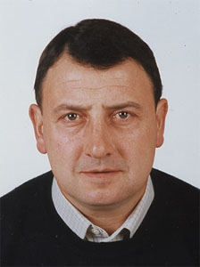

José Antonio Sáez Hernáez
José Antonio Sáez Hernáez  José Antonio Sáez Hernáez
José Antonio Sáez Hernáez 
 Haz clic aquí para detalles de la Familia de José Antonio con Magdalena Chamorro García
Haz clic aquí para detalles de la Familia de José Antonio con Magdalena Chamorro García
This page is within a frameset. View the entire genealogy report of Sáez Hernáez families, or surname index of Sáez Hernáez pedigrees or report summary of Sáez Hernáez heritage from "Árbol Genealógico de Manolo y Amalia".
Family Systems Theory.
© 2006 GenoPro Inc. All Rights Reserved.